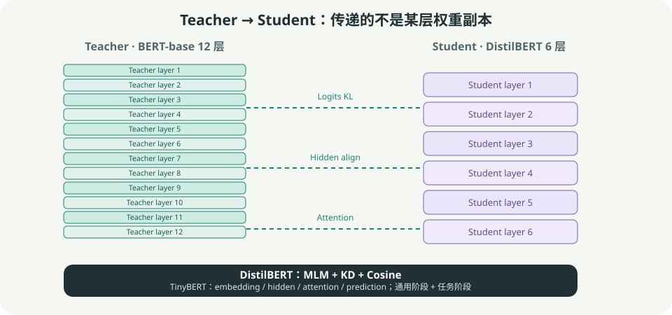

1. 为什么知识蒸馏不等于砍掉一半 Encoder 层
一个 12 层 BERT-base 微调后可能符合准确率要求，却在 CPU 上无法满足目标 p95 延迟。直接删除后六层可以降低计算深度，但后半部分原本形成的上下文表示不会自动迁移到前六层。知识蒸馏把已经训练好的 teacher 的行为变成 student 的额外学习信号，让小模型更有机会保留任务能力。
要同时回答三个问题：教师输出什么知识（词表 logits、任务 logits、隐藏状态、注意力矩阵），学生在什么阶段学习（预训练还是任务微调），以及怎么把不同层数和维度对齐。DistilBERT 与 TinyBERT 的答法并不相同。
蒸馏“减少参数/计算”仅指最终学生架构可能更小；训练时还需要 teacher 前向、甚至多阶段训练。不要用部署学生的成本替代知识迁移的训练总成本，也不能把蒸馏理解成模型权重的简单算术平均。
2. Soft targets：为什么教师的第二选择也有信息
假设 teacher 在一个 masked token 上给出概率：cat: 0.62, dog: 0.30, car: 0.08。硬标签只告诉模型正确 token 是 cat，忽略了 teacher 认为 dog 比 car 更相关。Distillation 使用软化后的完整输出分布，让 student 更接近教师对其它候选类别的相对判断，这种信号也被称作 dark knowledge。
给 teacher logits t、student logits s、温度 T>0：softmax(t/T) 与 softmax(s/T) 形成待对齐分布。温度越高通常越平滑；但不能机械地认为 T 越高越好。为了保持梯度尺度，一些蒸馏公式把 KL 项乘以 T²——这个约定要结合具体实现的 loss reduction 与系数审计。
此式为一处预测位置的 KL 定义，p 为 teacher、q 为 student，V 是类别/词表索引集合；对 MLM 应再只对有效选中目标位置聚合。工程中 KLDivLoss 常对输入要求 log probability 而 target 是概率，并且 reduction 的 batchmean 与逐 token 平均不同；若方向或缩放弄错，优化对象就变了。
3. DistilBERT：六层学生与三项目标
DistilBERT（Sanh et al., 2019）用更浅的 student 预训练 Encoder 继承 BERT teacher 表示。原论文讨论 6 层的学生，相对于 BERT-base 的 12 层保留中间表征，训练阶段从教师层初始化并结合三种损失：语言建模 MLM、soft-target 蒸馏，以及隐藏状态之间的 cosine embedding 对齐。
MLM loss 仍然利用真实原 token ID；蒸馏 loss 对 teacher/student 在 mask 位置的词表分布；cosine loss 让对应位置的学生与教师隐藏向量方向接近。总损失有配置权重，不是把三项默认等权求和。通常蒸馏仅需要 teacher 前向作为固定目标，teacher 不接受来自学生目标的梯度。
要把 12 层 teacher 与 6 层 student 对齐，需定义层映射，不能随意将 teacher 6 层输出复制到 student 6 层并宣称是“原论文复现”。当隐藏维不同，部分损失还需要 projection，且应记录该 projection 是否计入学生部署模型。
4. TinyBERT：把内部注意力也当作知识
TinyBERT（Jiao et al., 2020）强调 Transformer 特有的中间层蒸馏：embedding、hidden states、attention matrices、prediction logits 分别代表不同尺度的知识。其两阶段训练分别是general distillation（在通用预训练语料上迁移）与task-specific distillation（针对下游任务迁移）。
由于 teacher/student 层数与 hidden size 可不同，注意力分数矩阵适合按序列位置对齐，hidden state 则可能需要 learnable projection。特别需要区分教师注意力的 raw score 和 softmax 之后的 probability；如果不同实现蒸馏对象不同，应该在损失定义处明确，而不是只写“attention loss”。
下游阶段还包含利用任务训练数据及其增强文本对学生继续训练的方案；具体数据增强操作必须核对官方代码/附录。原论文 4 层模型在其指定 GLUE 设置下报告了较大压缩和推理加速，但数值不能推广到所有移动芯片、中文任务或不同 batch/输入长度。
5. 教师—学生映射到底怎么画

一旦学生 hidden size 变小，注意力头数、FFN 宽度和 embedding 都需要重新建模。简单用层数比值计算学生参数/延迟通常会出错：词表 embedding 可能仍很大，tokenizer 的预处理开销仍在，某些硬件对矩阵维度有特定友好区间。
6. 蒸馏注意力时，什么维度必须对齐
假设 teacher 的第 L 层 attention 分数为 Aᵗ ∈ R[B,hₜ,T,T]，student 的第 l 层为 Aˢ∈R[B,hₛ,T,T]。如果头数不同，不能直接将两个完整张量相减而假设广播后的结果有明确意义。要么选可对齐的头配置、要么建立头映射/聚合规则，并核对论文或实现使用的是哪种策略。
这里是为解释 MSE 语义的简化单头/已对齐层公式，Ω 为可比较的 token 位置对、N=|Ω|，并不替代 TinyBERT 论文的完整多项损失。padding 和不同 tokenizer 造成的 token 对齐错误会使 attention 蒸馏完全失去语义，因此通常需要 token-level 可比较输入，不能简单把中文两个不同词表的 T×T 矩阵视为同一空间。
7. 如何比较 12 层和 6 层模型才公平
实验首先固定下游数据 train/dev/test、预处理与长度分布，并把 teacher 完整微调、student 独立微调、student 蒸馏微调三种方案都放进对照；再分别报告质量、参数量、实际文件大小、peak RSS/VRAM、batch=1 p50/p95 与吞吐。衡量学生对 teacher 的保留程度不能只看一个 aggregate GLUE 平均，因为不同任务与数据切分的指标不同。
具体到 CPU/移动端，线程数、内存分配器、量化算子、序列 padding 和 tokenizer 时间都会影响最终体验。蒸馏学生训练很贵、服务时可能便宜；如果只运行一个微型离线批次，不足以代表生产部署的长期总拥有成本。
8. 交互：三种知识到底给学生传了什么
切换教学目标，观察每种损失读哪个张量、哪个阶段计算、是否需要对齐标签。
选择蒸馏目标
Teacher logits → softmax(t/T)，Student logits → softmax(s/T)。 对相同标签类别/词表索引计算 KL；MLM 必须只在目标位置取损失。 蒸馏的是软分布，不是把 teacher 的 hard argmax 当作唯一答案。
9. 复现边界：不能把 TinyBERT 当作 DistilBERT 的别名
DistilBERT 的三项预训练目标与 TinyBERT 的多粒度 Transformer distillation 不是同一配方，后者显式包含通用与下游两阶段。模型压缩倍率必须附带原论文的具体 teacher/student 架构和硬件条件。
若任务有较高错误成本（安全内容检测、医学编码等），还应检查蒸馏学生的少数类召回、置信度校准和分布外错误；平均分只差一点并不保证每一种输入都接近 teacher。
关键结论
- DistilBERT 在 MLM 之外引入 soft-label KD 与 cosine 对齐；TinyBERT 进一步蒸馏多层注意力/隐藏表征并分为通用与任务阶段。
- 蒸馏 KL 有温度、方向、类别维与有效 token 归一化约定；teacher/student 不同维度必须有明确映射。
- student 参数少不等于训练花费少；论文延迟倍率只在指定设备、配置和测量协议下成立。